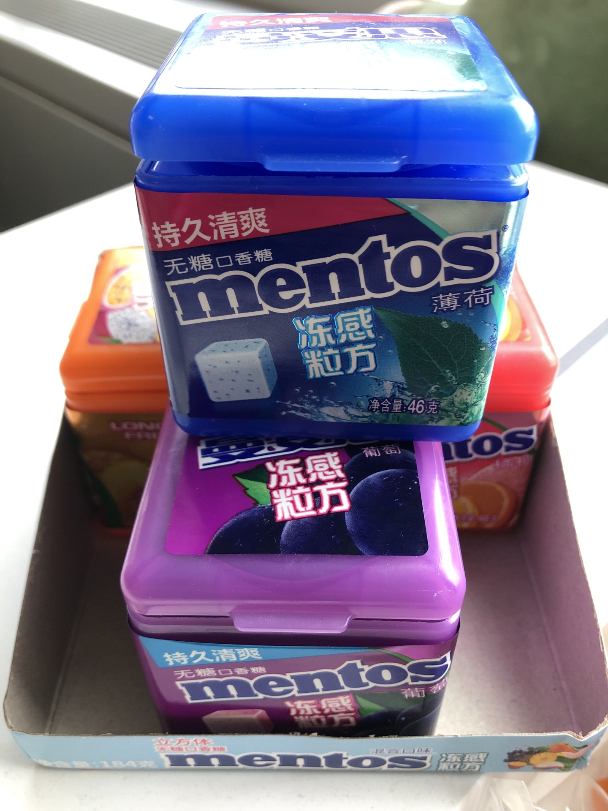

好的推荐系统
什么是推荐系统
随着信息技术和互联网的发展，人们进入了信息过载(information overload)的时代，生产者和消费者都面临着很大的问题:生产者怎么能让自己脱颖而出，受到关注；消费者怎么才能在庞大的信息中找到自己想要的。推荐系统就是连接用户和信息的桥梁。
在信息过载的情况下，当用户明确知道自己想要什么的时候，可以通过搜索引擎来进行查找。当用户自己也不知道自己想要什么信息的时候，推荐系统就发挥作用了。所以，搜索引擎和推荐系统一主动一被动，可以看作互补的为用户服务。
推荐的方式
- 社会化推荐(social recommendation):即熟人推荐。
- 基于内容推荐(content-base filtering):主动搜索之后根据内容来进行推荐
- 协同过滤(collaborative filtering):通过排行榜，看大家都喜欢什么，更进一步，找到与自己爱好相近的用户，看他们最近喜欢什么。
由此可见，推荐算法的本质是通过一定的方式把用户和物品联系起来。
推荐系统可以将长尾(long tail)的信息推荐给需要它的用户，帮助用户发现感兴趣但是难发现的物品。
个性化推荐，只有算法是没意义的，同时也依赖用户的行为数据。完整的推荐系统是由产品，数据系统，推荐算法三部分构成。
个性化推荐的前提
- 信息过载
不需要绝对大，相对的过载就需要推荐，比如我现在只有一个小时的时间，需要从两部电影中选出一部来看，那我就需要推荐。 - 没有明确需求
信息过载比较好理解，那为什么说没有明确的需求呢？举个现实中的例子。我这有四盒口香糖，我不是很喜欢吃薄荷味的，所以我如下摆放口香糖，想让别人来吃的时候先吃这个我不喜欢吃的。这是我的推荐。

实际上吃口香糖的人中，并不会拿上面这盒里的，因为在有明确需求的情况下，推荐的意义不大。我这次就是一个错误的推荐。
广告-也是推荐
由于不同产品
信息过载[^信息过载]
信息过载(information overload)
[^信息过载]: information overload